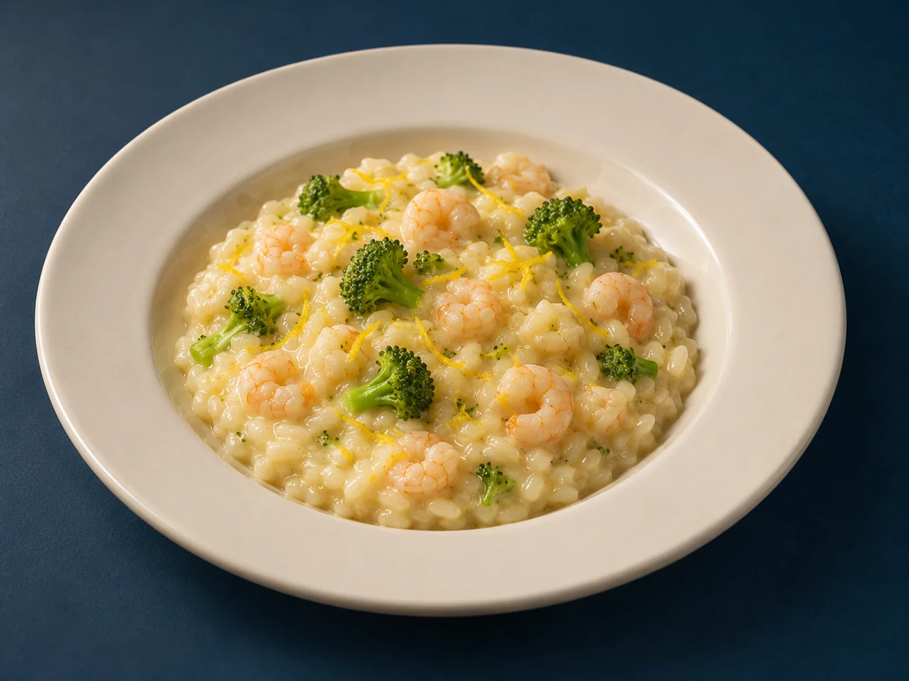
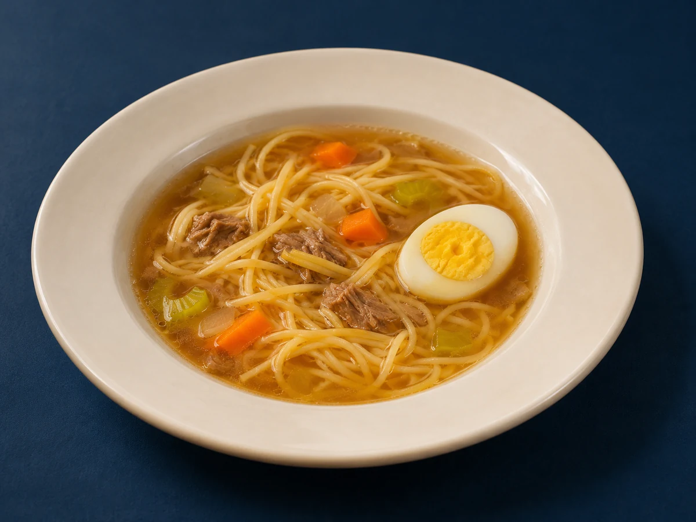
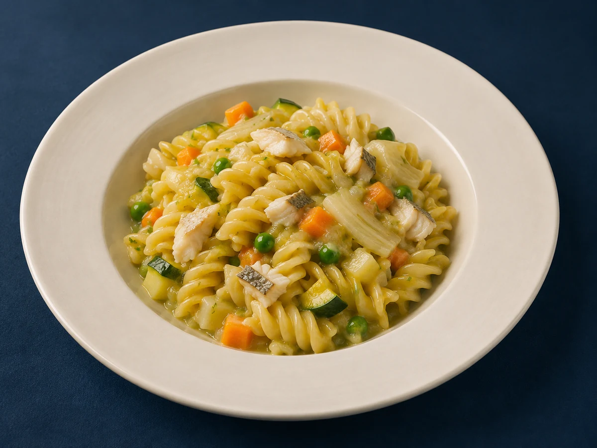
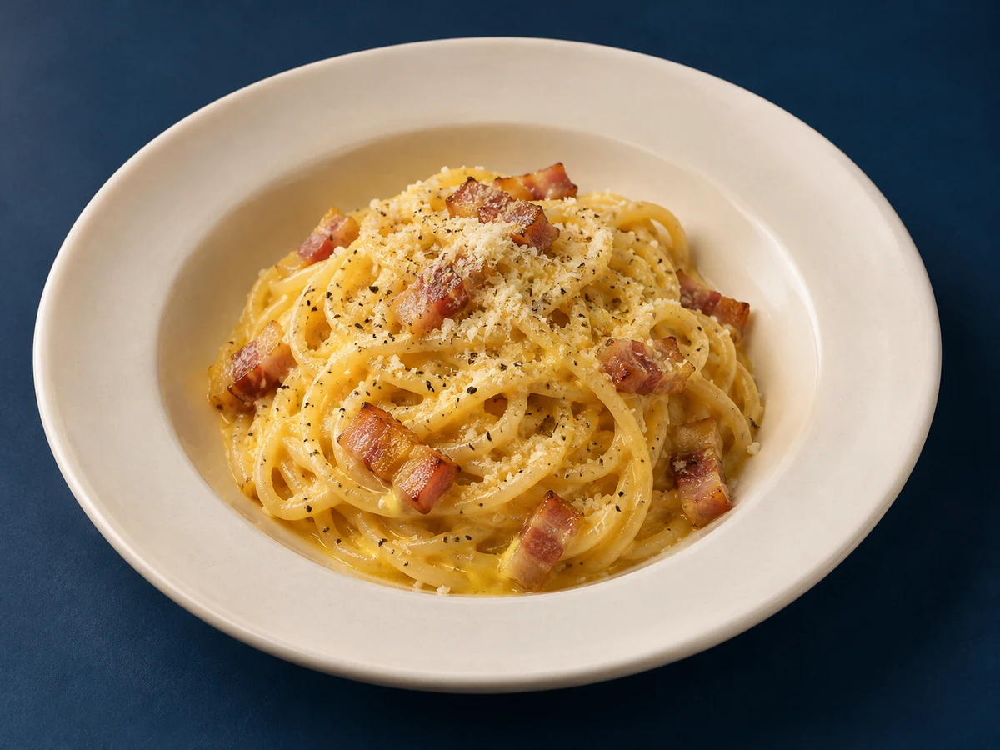
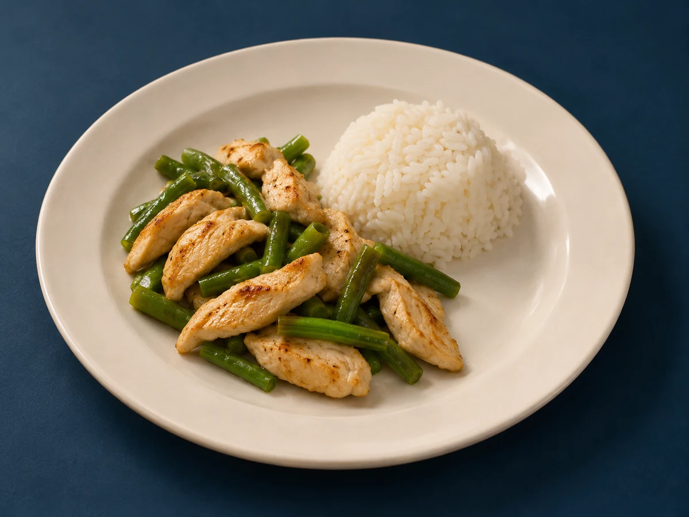
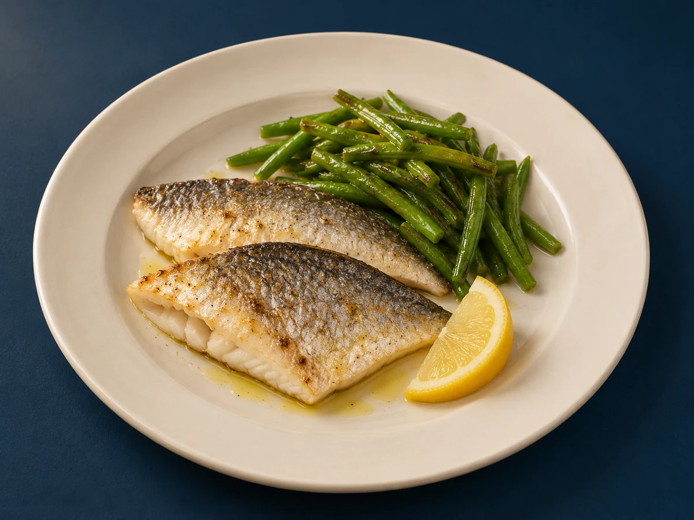
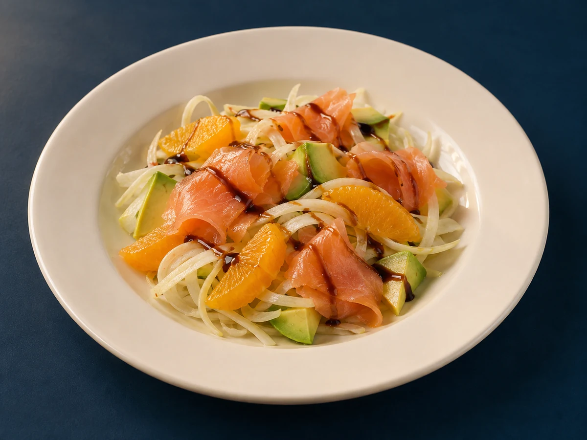
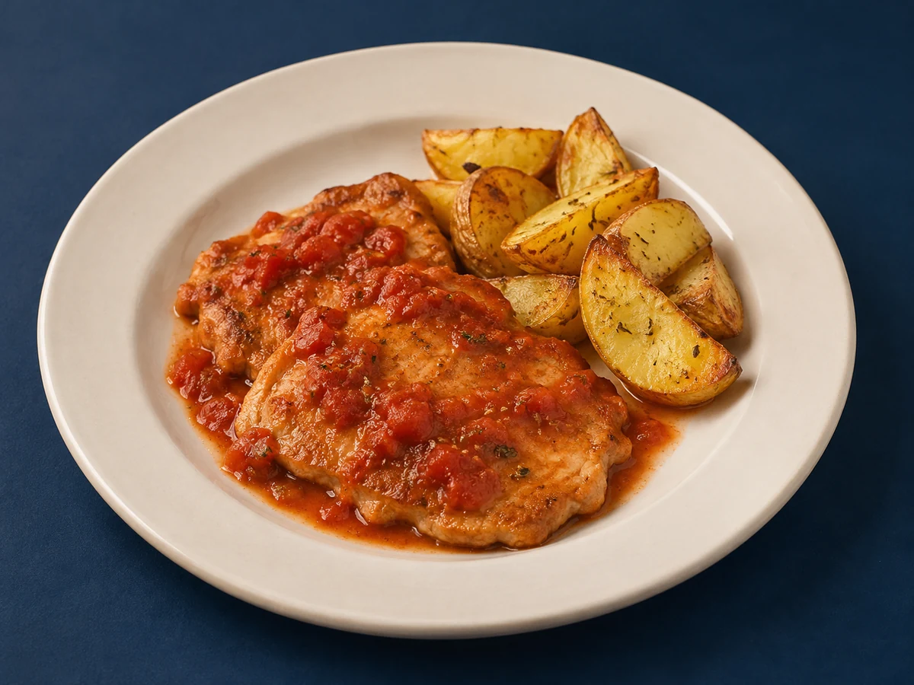

Risotto con broccoli, gamberetti* e limone

Risotto cremoso con broccoli e gamberetti*, profumato al limone.
02
Valido solo a pranzo,
nel giorno sotto indicato

Risotto cremoso con broccoli e gamberetti*, profumato al limone.
02

Noodles serviti in brodo di carne con verdure e uovo.
03

Fusilli con orata e una crema di carote, patate, piselli, finocchi, zucchine e cipolla.
0104

Spaghetti con una crema di uova e pecorino e pancetta affumicata.
010307

Straccetti di pollo con fagiolini, accompagnati da riso bianco al vapore.

Filetti di orata profumati al limone, serviti con fagiolini saltati.
04

Finocchi, arancia, salmone e avocado conditi con aceto balsamico.
04

Maiale al sugo di pomodoro, accompagnato da patate al forno.
Le immagini dei piatti, pur realistiche, sono generate con intelligenza artificiale e hanno scopo illustrativo.
Attendere la conferma del Ristorante per considerare valido l’ordine.
Persone indicate nelle richieste via WhatsApp: 0
Dato indicativo: richieste avviate, non prenotazioni confermate. Azzeramento ogni giorno alle 15:00.